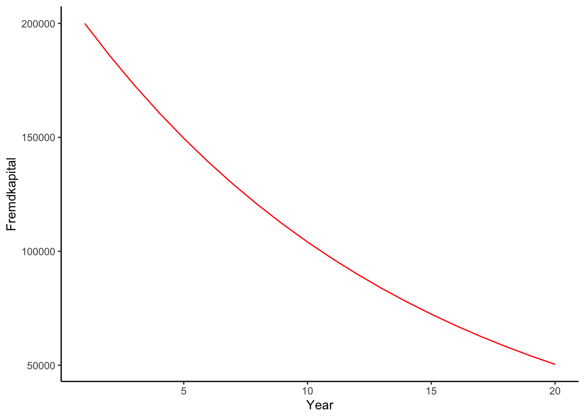
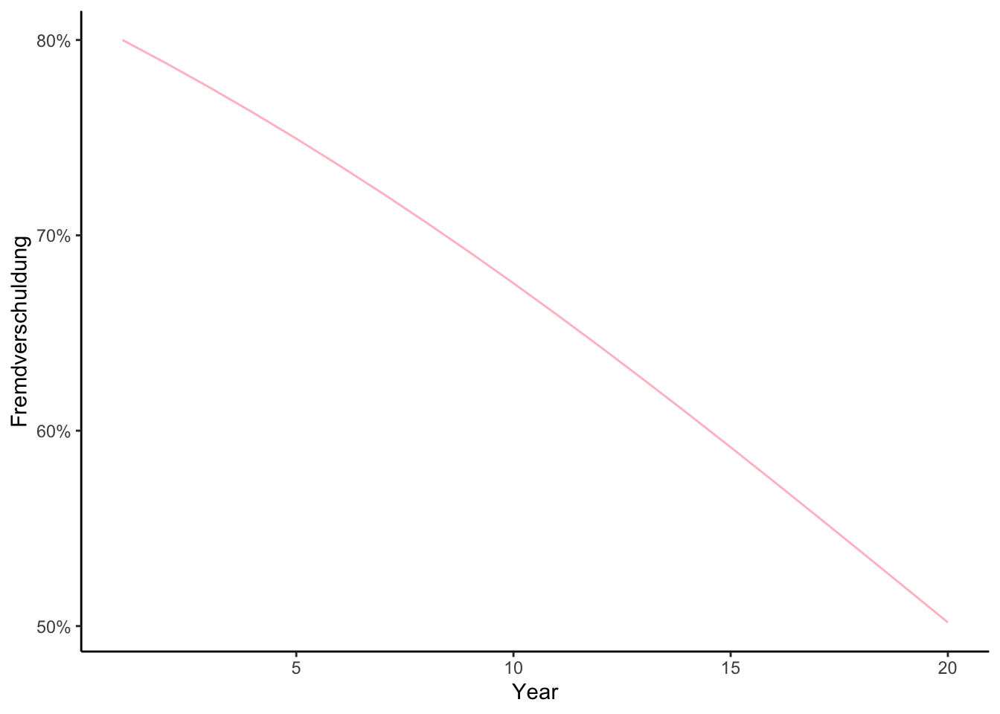

Year Eigenkapital Fremdkapital Jaehrliche_Zinszahlung
1 1 50000 200000.00 0.000
2 2 50000 186000.00 10000.000
3 3 50000 172980.00 9300.000
4 4 50000 160871.40 8649.000
5 5 50000 149610.40 8043.570
6 6 50000 139137.67 7480.520
7 7 50000 129398.04 6956.884
8 8 50000 120340.17 6469.902
9 9 50000 111916.36 6017.009
10 10 50000 104082.22 5595.818
11 11 50000 96796.46 5204.111
12 12 50000 90020.71 4839.823
13 13 50000 83719.26 4501.035
14 14 50000 77858.91 4185.963
15 15 50000 72408.79 3892.946
16 16 50000 67340.17 3620.439
17 17 50000 62626.36 3367.009
18 18 50000 58242.52 3131.318
19 19 50000 54165.54 2912.126
20 20 50000 50373.95 2708.277
Jaehrliche_Amortisationszahlung Fremdverschuldung
1 4000.000 0.8000000
2 4000.000 0.7881356
3 3720.000 0.7757646
4 3459.600 0.7628887
5 3217.428 0.7495121
6 2992.208 0.7356423
7 2782.753 0.7212901
8 2587.961 0.7064697
9 2406.803 0.6911986
10 2238.327 0.6754979
11 2081.644 0.6593923
12 1935.929 0.6429100
13 1800.414 0.6260823
14 1674.385 0.6089440
15 1557.178 0.5915326
16 1448.176 0.5738885
17 1346.803 0.5560542
18 1252.527 0.5380743
19 1164.850 0.5199948
20 1083.311 0.5018628TestingTester
Creating functions for future financial projections
With a lot of ChatGPT-help i tried to work out a function projecting total-depth and percentage of depth to own assets (Not the financial guy here… just wnated to do something i otherwise never do. Nevertheless, one might argue this makes no sense when running to AI for help. But rather than going down this philoyophical sinkhole i show some overly simple graphs about $$$$- Enjoy!)
Import Function
First i import the function from a separate script - But i dont show it to you, because i want to keep it to myself - Death to open Science ;-)!
Inventing Data
Now i present to you the fruits of work with a freshly invented data-table:
Tada!
Baking
Now to finish the magic i will bake you a cake! A data-cake!

